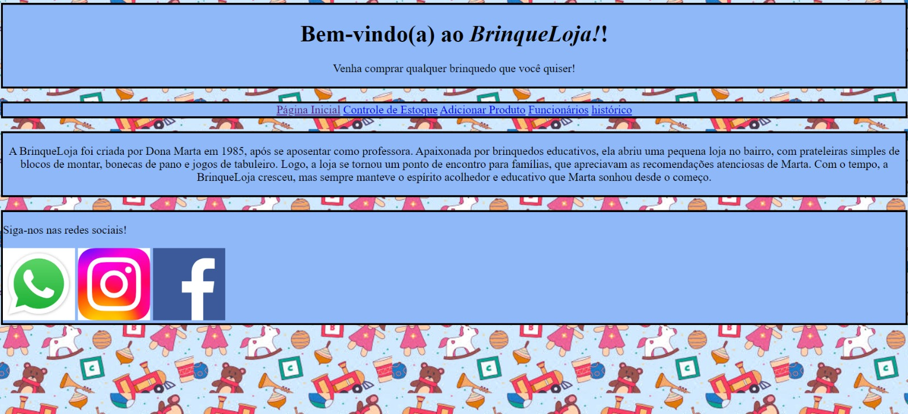

SABORES DO SENAC

O que se baseia:
Este projeto se baseia no restaurante do senac chamado "Sabores Do Senac", ele mostra todas as melhores comidas do cardápio e fala sobre o restaurante.
Linguagens utilizadas:
HTML
RESTAURANTE